The Iguazú Falls are waterfalls of the Iguazú River and are on the border of the Argentine province of Misiones and the Brazilian state of Paraná. Together, they make up the largest waterfall system in the world.
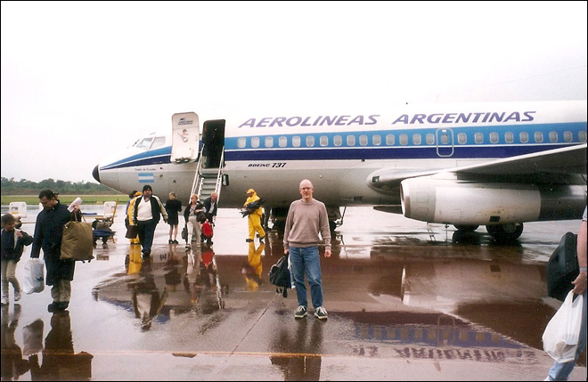
We flew from Buenos Aires up to Iguazú and arrived in the rain which had been falling fairly continually over the previous weeks, causing the Iguazú River to flow at its peak volume causing a massive surge over the waterfall - as can be seen in the photos below.
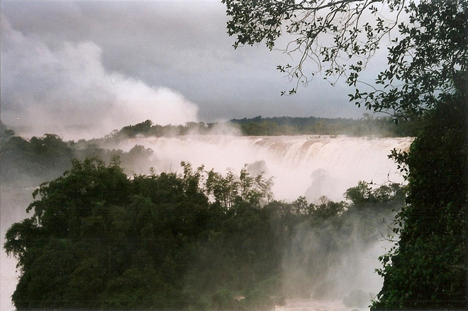
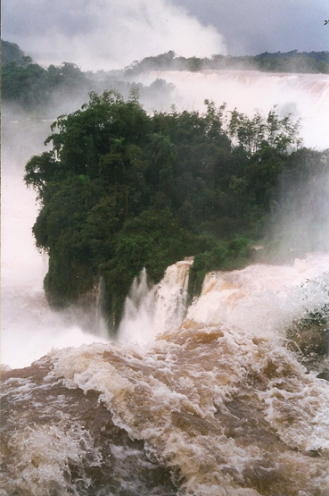
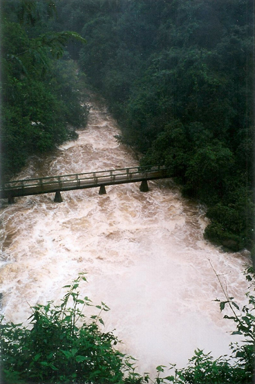
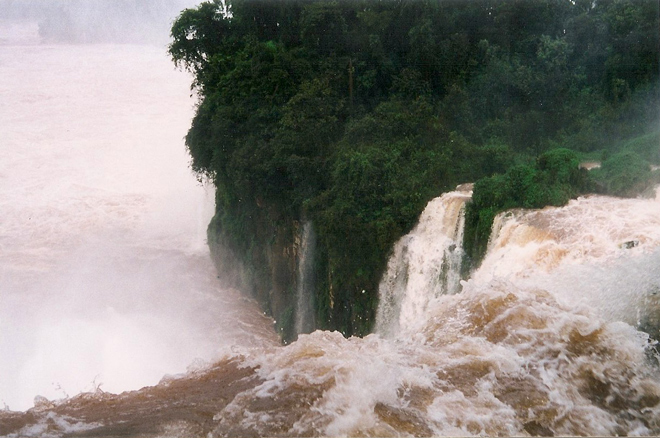
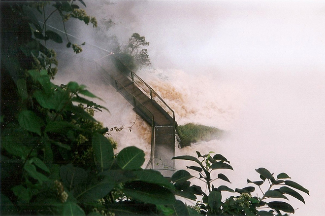
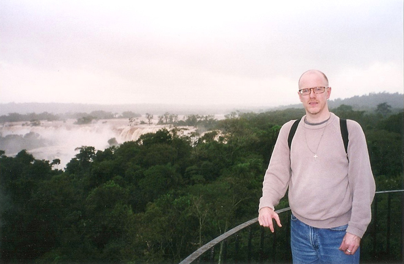
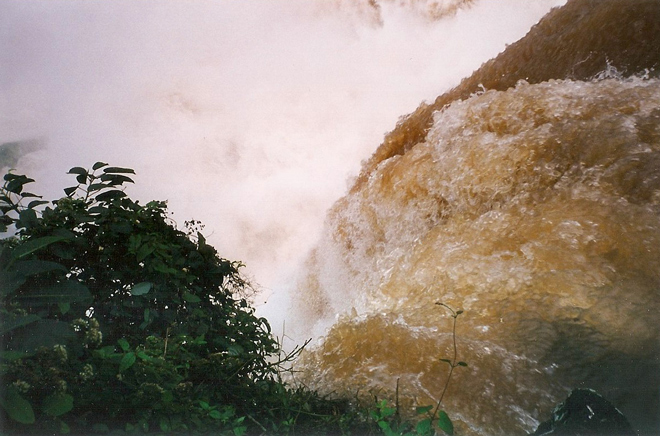
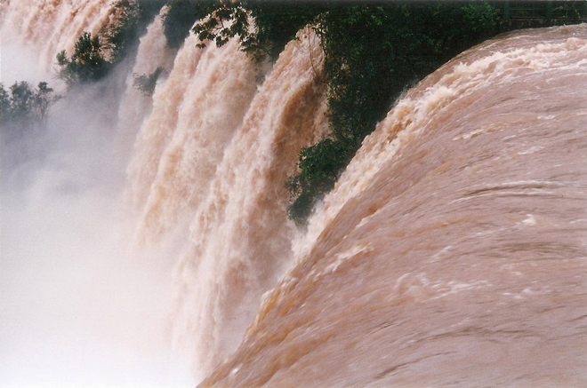
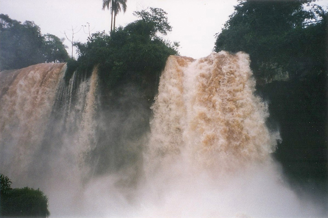
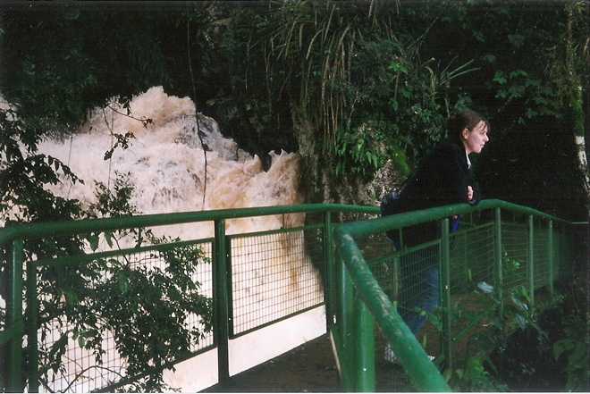
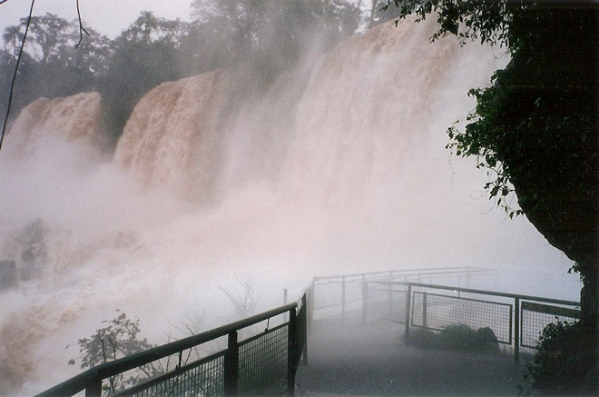
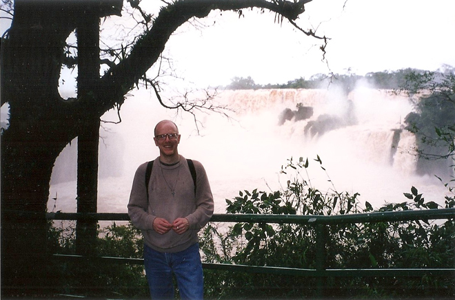
Riitta with our taxi driver whom we hired to take us around for the two days we spent in Iguazú - and me on the steps where the three countries met: Brazil, Argentina and Paraguay.
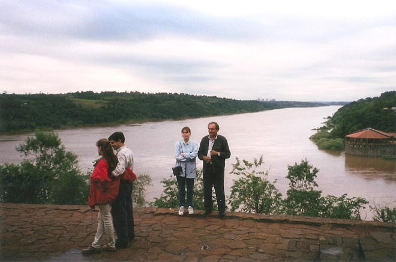
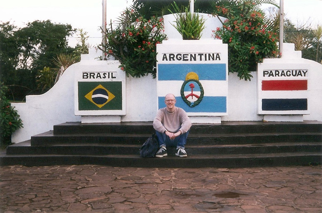
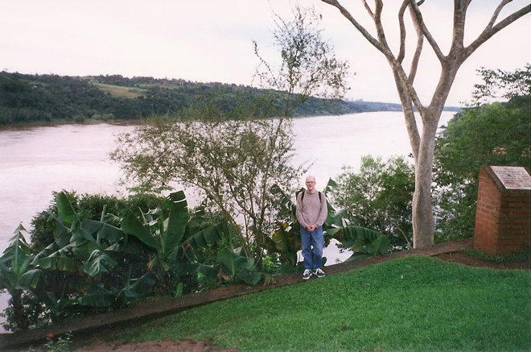
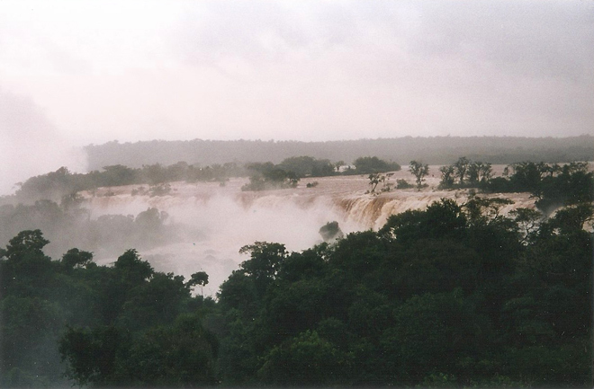
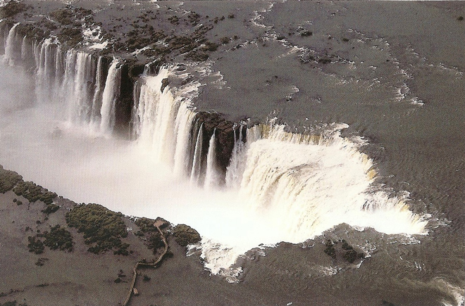
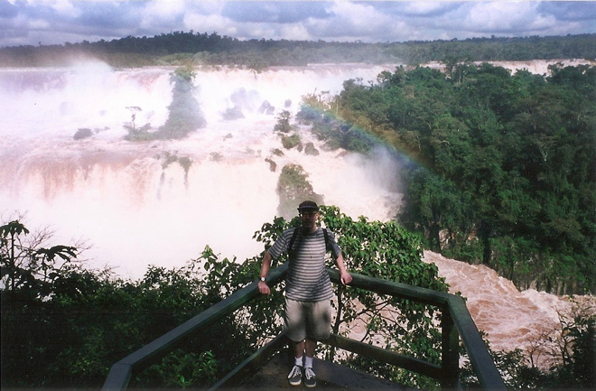
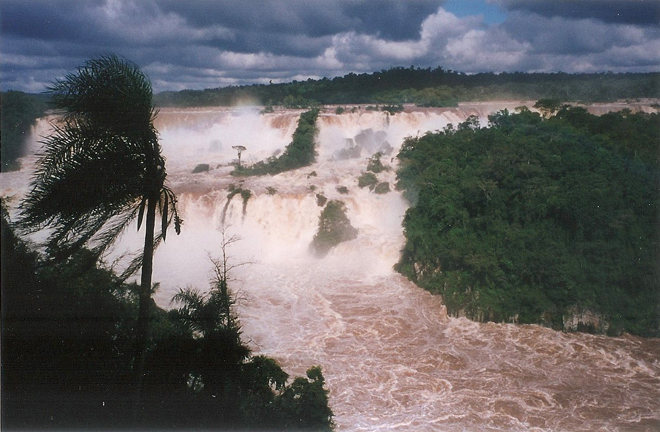
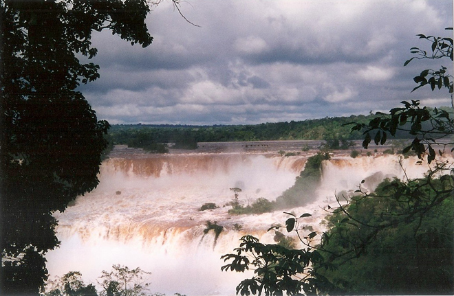
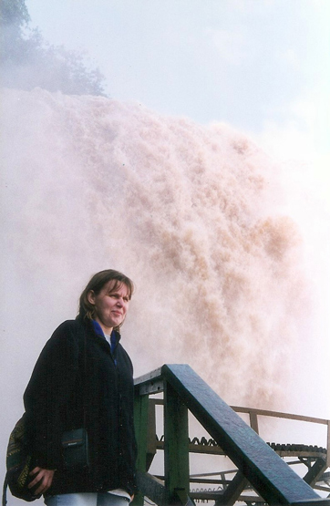
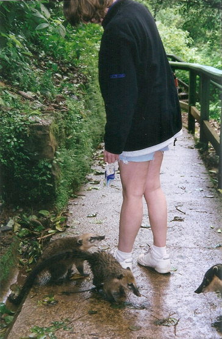
Here, Riitta meets some friendly coati (a type of South American raccoon). As the 'helpful' sign indicates: "Often audacious, however, offer no risk if they are not bothered. Care should be taken when transporting any type of bags and food during the tour, as they usually search for food with enough adventurous even in the presence of humans".
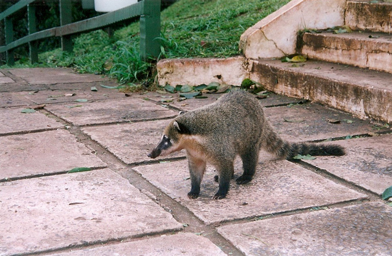
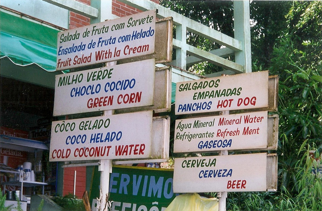
Later that evening, our taxi driver man took us, illegally, over the bridge into Brazil without a visa. The border guards seemed to know him (and knew that we would be taken back to Argentina) but obviously expected some sort of back-hander to "look the other way" while we visited.
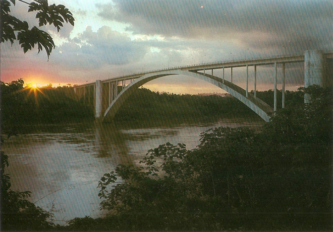
A heavily-laden coconut tree and two exotic butterflies: the red-banded Biblis hyperia nectanabis and the turquoise-flashed Doxocopa laurentia ('Turquoise Emperor').
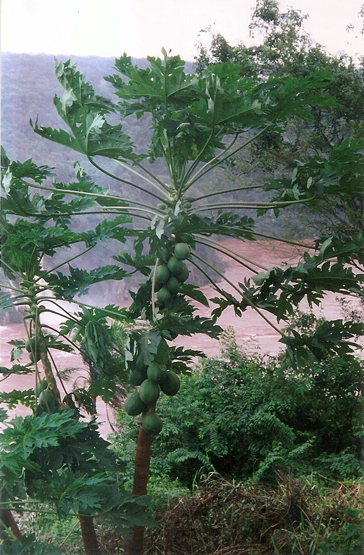
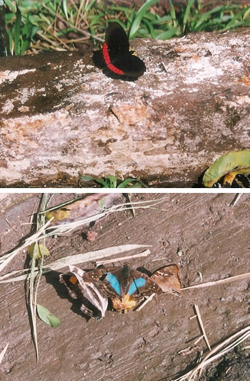